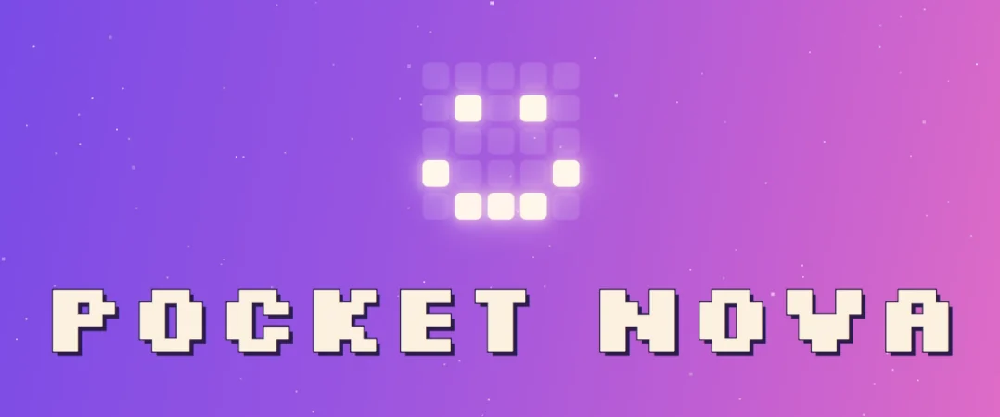

Pocket Nova
A pixel pet on a 5×5 LED matrix that doubles as a Bluetooth media remote and a TV remote.
01The problem
One button, a 24 mm screen, and too many remotes.
I wanted a keychain-sized device that was fun to carry and actually useful: something to skip a song, change the volume or turn off a TV without hunting for the right remote.
02What I built
Custom firmware for an ESP32 Atom Matrix. A pet called Nova lives on the home screen; hold the button for the menu, double-tap for the last app. It has 11 apps, three Bluetooth pairing slots and an infrared TV remote for 20 brands, with every code cross-checked against several public databases. A small PC panel opens by itself when it is plugged in.
- APixel pet home screen and 11 one-button apps
- BBluetooth media keys with three pairing slots
- CIR TV remote for 20 brands plus a find-my-TV sweep
03Screenshots
Click to enlarge04Result
A remote I actually carry.
It survives restarts, reconnects on its own and updates from the PC panel.
What I learned: a one-button interface forces you to cut every feature down to the essential gesture.